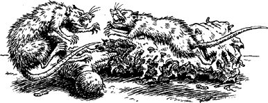

224
Intrigued by the squealing, you approach the door cautiously and place your eye to the spy-hole. Your fears soon melt away when you see two ragged-eared rats in a corridor beyond, fighting over a meaty bone. You chuckle as the smaller of the two unexpectedly wins the dispute and proudly drags away his prize. Your eyes follow the rat as it disappears towards a distant hallway where you spy something else that makes your pulse quicken in anticipation.
{kind=link}

Using your Magnakai skills to magnify your vision, you see a pair of massive doors at the far side of the thoroughfare, guarded by two warriors clad in polished silver armour. A steady traffic of Drakkarim and Giaks passes to and fro before the doors, but none enter. You judge the hall to be over a hundred yards away, but even at this distance you can sense a great power is being contained behind the doors.
After a short while the traffic in the hallway subsides. Then two wispy, ghost-like figures glide into view, each clad in shimmering semi-transparent robes, and at once you recognize them to be Nadziranim—masters of evil magic. The guards step aside and, as the great doors part to allow the sorcerers entry, a flood of blinding purplish light pours from out of the room beyond. Suddenly your senses tingle with a premonition that your friend Banedon is close at hand. Convinced that you will find him somewhere beyond the doors, you resolve to gain entry as quickly as you can, but if you are to get past the two guards you must first create a diversion.
If you wish to start a fire in this store room in order to lure the guards away, turn to 268.
If you wish to put on a Drakkarim uniform (which lies discarded on the floor nearby) and then attempt to bluff your way past the guards, turn to 70.